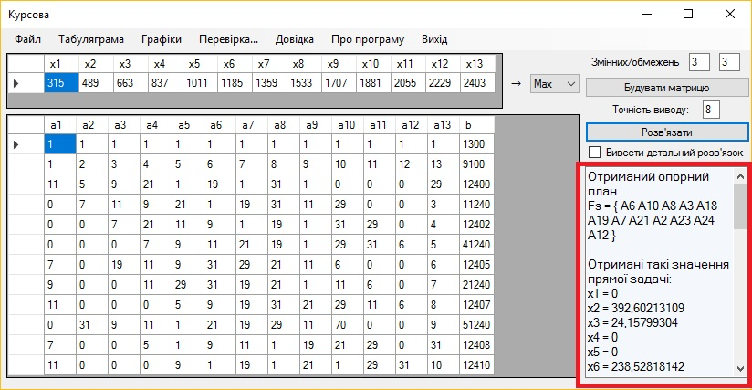
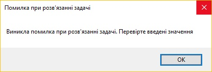
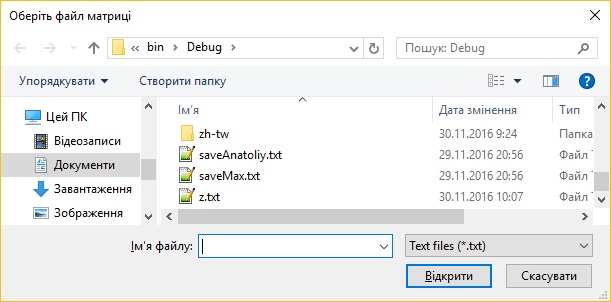

Довідка з використання програмного продукту
Зміст
Основні елементи
Головне вікно програми має такий вигляд:
Основну частину робочої області займають таблиці, куди ввоядться дані. Згори бачимо елементи головного меню. Праворуч – кнопки та поля для побудови та заповнення таблиць і поле відповіді
Головне меню містить такі елементи:
- Файл - Дозволяє виконувати маніпуляції з файлами
- Завантажити матрицю з файлу - Завантаження раніше збережених даних таблиць з txt-файлу
- Зберегти матрицю у файл - Збереження заповнених таблиць у txt-файл
- Зберегти результати обчислень - Збереження результатів роботи програми у txt-файл
- Табуляграма - Відображає розрахунки по ітераціям в таблицчній формі
- Графіки
- Зміна цільової функції - Відображає графік зміни цільової функції по ітераціям
- Область допустимості оптимального плану
- Перевірка... - Надає доступ до перевірки знайденого розв'язку
- Допустимості - Перевірка допустимості
- Оптимальності - Перевірка оптимальності
- Ефективності - Перевірка ефективності
- Стійкості - Перевірка стійкості
- Довідка - Довідка щодо користування програмою
- Про пргограму - дані про творців програми
- Вихід - Для виходу з програми
Побудова таблиць і введення даних
Для побудови таблиць задайте кількість змінних та обмежень, що відповідає кількості рядків і колонок таблиць.
Далі введіть необхідні значення для матриці цільової функції та матриці обмежень в таблиці. Можна скористатися кнопкою "Заповнити тестові значення"

Вкажіть, куди прямує функція. Якщо не вказати, автоматично буде обране значення Max
Розв'язок задачі
Для розв'язку задачі просто натисніть кнопку "Розв'язати". Результат відобразиться в спеціальному полі:
Якщо була встановлений прапорець "Вивести детальний розв'язок", то буде в окреме вікно буде виведено таблиці з покроковими розрахунками:
Також можна перевірити допустимість, обравши пункт меню "Перевірка..."" - "Допустимість"
При виникненні помилки буде відображено попередження
Завантаження та збереження файлів
Значення заповнених таблиць, як і результати роботи програми, можна зберегти у txt-файл, також таблиці можна заповнити з завантаженого txt-файлу, раніше створеного програмою. Для цього слід скористатися пунктом меню "Файл" і обрати відповідний підпукнт
Графіки
Побудова графіків можлива лише після розв'язання задачі.
Як приклад приведемо графік змін цільової функції по ітераціям:
Про програму
Над програмою працювали студанти ХПІ: Тюльпан Анатолій, Чуйкова Олена, Чуприна Максим, Тритенко Дар'я. Керівник курсової роботи: професор кафедри ПІІТУ Лисицький В. Л.
Харків, 2016р.
Вгору